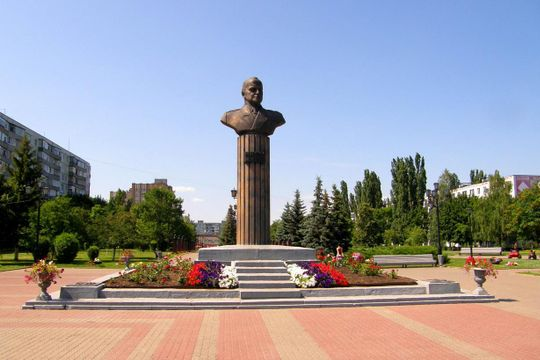
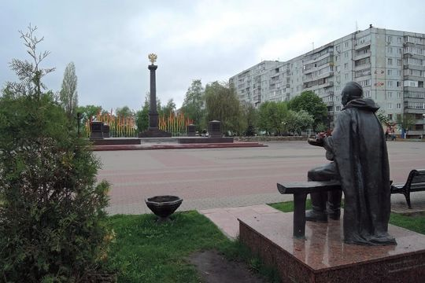

Старооскольский парк Победы
- Режим работы: круглосуточно
- Цена за вход: бесплатно
- Местоположение: ул. Жукова микрорайон, 38, Старый Оскол, Белгородская обл.
Одним из отличительных мест в парке является
первый в СССР памятник Георгию Константиновичу Жукову.
Его открыли в 1988 году в микрорайоне, названном в честь маршала.
На открытие приезжала дочь Жукова.

Автор проекта – архитектор-художник Киевского
творческо-производственного объединения «Художник»
Василий Георгиевич Гнездилов, соавторами стали скульптор
Валентина Михайловна Константинова и главный архитектор города Валентин Николаевич Фуклев.
Памятник был создан по инициативе Совета ветеранов, деньги – около 30 тысяч рублей –
собирали всем городом. Бюст отлит в Киеве, а колонну и стилобат изготовили на местных заводах
– металлургического машиностроения и механическом.

Также в 2014 году на площади Победы был открыт памятник советскому солдату.
Умудрённый опытом боец, отдыхая на краю скамейки, с прищуром, потягивая «цыгарку»,
поглядывает на стелу «Город воинской Славы» - символ признания заслуг старооскольцев и
воинов освобождавших город от немецко-венгерских оккупантов.
Также на площади находится Аллея славы, на которой находятся 16 бюстов героев войны. Подробнее о некоторых из них вы можете узнать на следующих сайтах:
https://imena.onf.ru/placements/belgorodskaya-oblast/alleya-slavy
https://www.kavicom.ru/pages-view-470.html